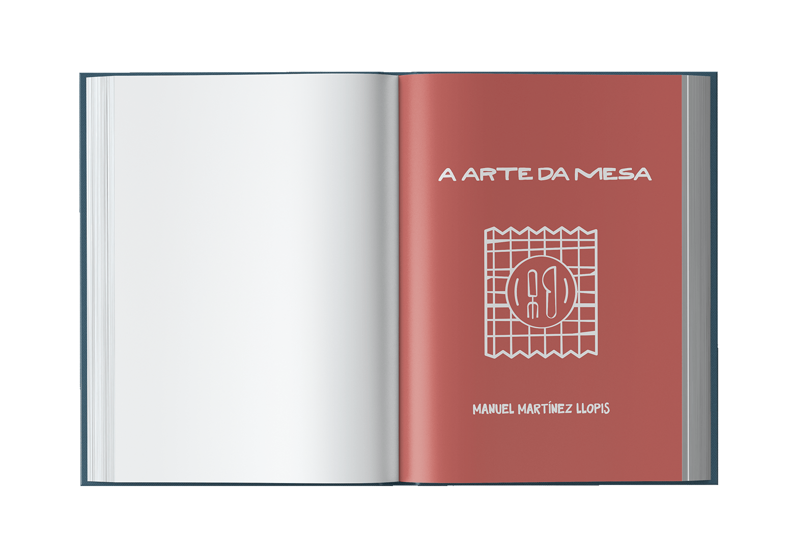
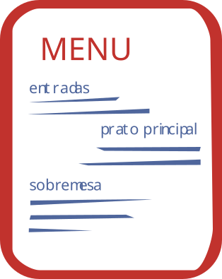
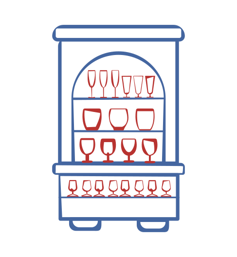
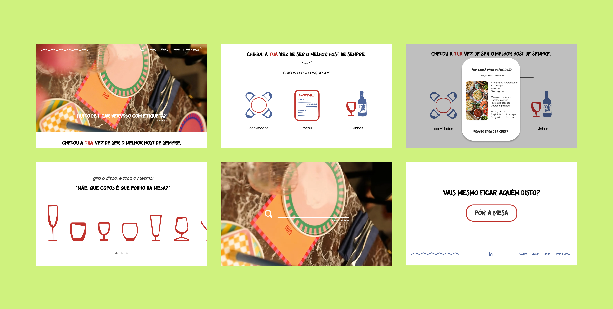

A Arte da Mesa is a rebranding project for a classic Portuguese book on table etiquette and the art of hosting. Originally published in 1999, the book is a comprehensive guide to the rituals of dining, from the placement of cutlery to the choreography of a formal dinner. The challenge was to translate this encyclopedic tradition into a modern, visually engaging object that could speak to a contemporary audience without losing its authority.
The redesign embraces a rigorous typographic system rooted in editorial precision. The cover uses a restrained palette and a bold grid to signal confidence, while the interior layouts balance dense reference content with generous white space and carefully considered hierarchy. Each chapter opens with a full-bleed illustration that reinterprets traditional etiquette through a more contemporary lens.
The result is a book that feels at once archival and current — a design object worthy of the table it describes.





